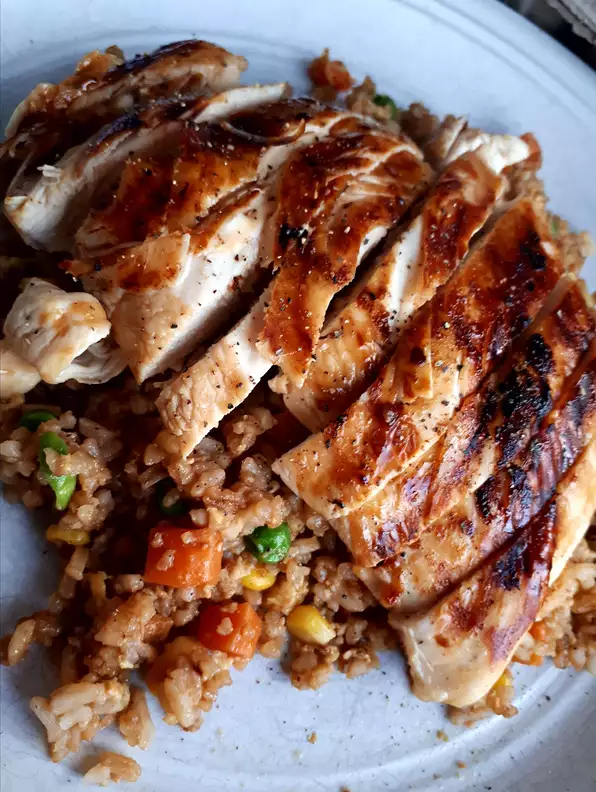

Grilled Chicken Asian

Description
This Asian chicken recipe is great for last-minute company or a quick dinner by rounding it out with a baked potato and tossed salad.
Ingredients
- ¼ cup soy sauce
- 2 tablespoons honey
- 4 teaspoons sesame oil
- 2 cloves garlic, crushed
- 3 slices fresh ginger root
- 4 skinless, boneless chicken breast halves
Steps
- Combine soy sauce, honey, sesame oil, garlic, and ginger in a small microwave-safe bowl; heat in the microwave on medium power for 1 minute, then stir. Heat again for 30 seconds, watching closely to prevent boiling.
- Place chicken breasts in a shallow dish. Pour soy sauce mixture over top and set aside to marinate for 15 minutes.
- Preheat an outdoor grill for medium-high heat and lightly oil the grate.
- Meanwhile, remove chicken from marinade; transfer marinade into a small saucepan and bring to a boil. Reduce heat to low and simmer until thick, about 1 minute. Set aside for basting.
- Cook chicken on the preheated grill, basting frequently with reserved marinade, until golden brown on all sides and chicken is no longer pink in the center, about 6 to 8 minutes per side. An instant-read meat thermometer inserted into the thickest piece should read at least 160 degrees F (70 degrees C).